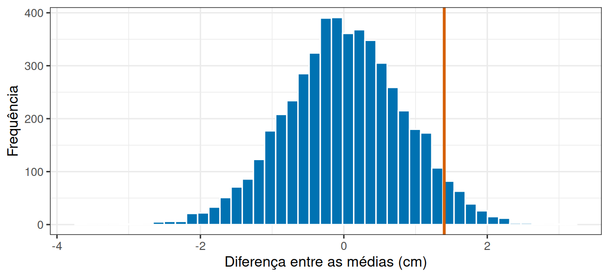
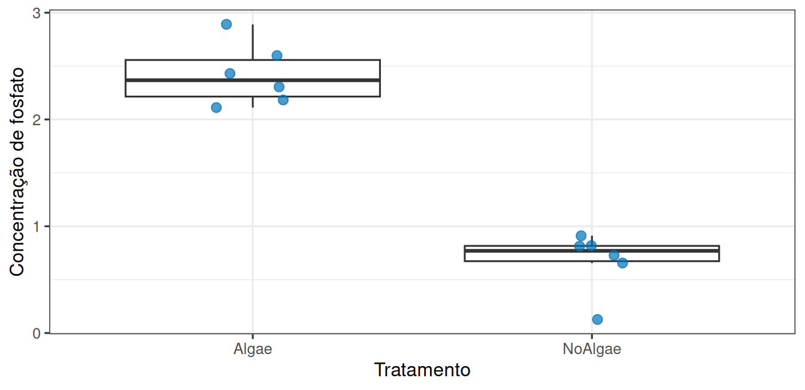
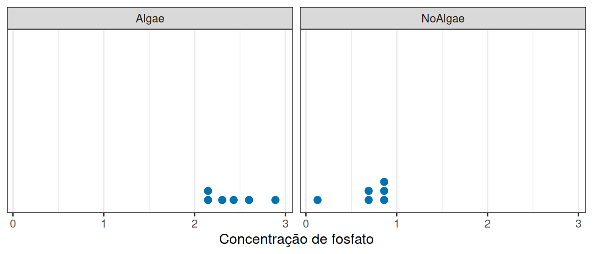
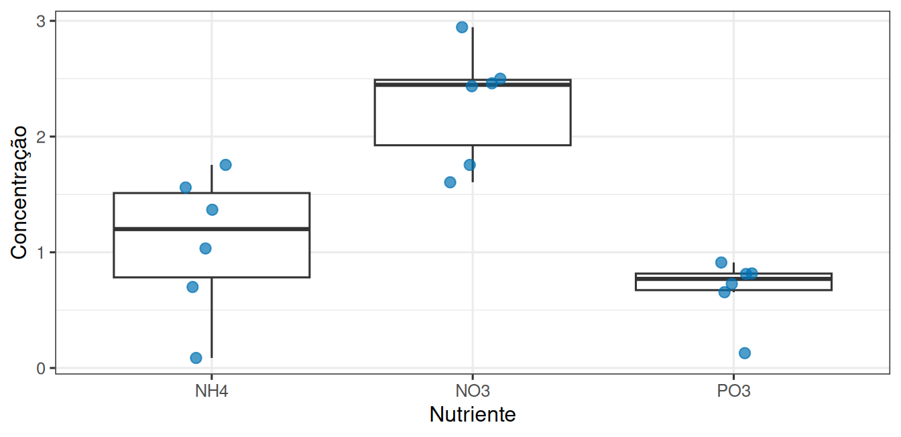

library(tidyverse)
theme_set(theme_bw(base_size = 12))Prática em R 05
Do acaso à comparação de dois grupos
1 Duas perguntas, nesta ordem
Um experimento comparou duas condições e encontrou uma diferença entre as médias. Antes de comemorar, é preciso responder: uma diferença desse tamanho apareceria com que frequência se as duas condições fossem idênticas?
Nesta prática construímos primeiro esse “mundo sem efeito” no computador, para ver com os próprios olhos o que o acaso é capaz de produzir. Depois aplicamos a mesma lógica a um experimento real em mesocosmos marinhos.
2 Um experimento onde sabemos que não há efeito
Doze placas de assentamento por substrato, resposta com desvio-padrão de 2 cm, e nenhuma diferença real entre os substratos:
n_por_grupo <- 12
desvio <- 2
centro <- 10.2
substrato_a <- rnorm(n_por_grupo, mean = centro, sd = desvio)
substrato_b <- rnorm(n_por_grupo, mean = centro, sd = desvio)
diferenca <- mean(substrato_b) - mean(substrato_a)
diferenca[1] 0.3396107As duas linhas de rnorm() usam a mesma média. Ainda assim a diferença observada não é zero: nesta execução ela foi de 0,34 cm.
3 Muitas repetições do mesmo experimento
Em vez de repetir na mão, use replicate():
diferencas <- replicate(
5000,
mean(rnorm(12, mean = 10.2, sd = 2)) - mean(rnorm(12, mean = 10.2, sd = 2))
)
length(diferencas)[1] 5000mean(diferencas)[1] 0.01563912sd(diferencas)[1] 0.828998Cinco mil experimentos, todos sem efeito nenhum. O conjunto de resultados que eles produzem é a distribuição nula.
diferenca_observada <- 1.4
ggplot(tibble(d = diferencas), aes(x = d)) +
geom_histogram(bins = 45, fill = "#0072B2", colour = "white") +
geom_vline(xintercept = diferenca_observada, colour = "#D55E00", linewidth = 1.1) +
labs(x = "Diferença entre as médias (cm)", y = "Frequência")
4 Qual é a proporção de resultados tão extremos?
O valor de p é apenas uma contagem: quantas das cinco mil diferenças foram tão distantes de zero quanto a observada.
proporcao_extremos <- mean(abs(diferencas) >= diferenca_observada)
proporcao_extremos[1] 0.0922abs() toma o valor absoluto, o >= gera TRUE/FALSE para cada uma das cinco mil, e mean() de um vetor lógico devolve a proporção de TRUE.
5 Agora com dados reais
Um experimento em mesocosmos investigou como a presença de algas afeta a concentração de nutrientes na água. Vamos abrir os dados:
url <- "https://raw.githubusercontent.com/FCopf/datasets/refs/heads/main/zuur-2009-data-sets/Biodiversity.txt"
biodiv <- read_tsv(url, show_col_types = FALSE)
glimpse(biodiv)Rows: 108
Columns: 7
$ MU <dbl> 1, 1, 1, 2, 2, 2, 3, 3, 3, 4, 4, 4, 5, 5, 5, 6, 6, 6, 7,…
$ Mesocosm <dbl> 1, 1, 1, 2, 2, 2, 3, 3, 3, 4, 4, 4, 5, 5, 5, 6, 6, 6, 7,…
$ Abundance <dbl> 0, 0, 0, 4, 4, 4, 8, 8, 8, 8, 8, 8, 12, 12, 12, 16, 16, …
$ Biomass <dbl> 0.0, 0.0, 0.0, 0.5, 0.5, 0.5, 1.0, 1.0, 1.0, 1.0, 1.0, 1…
$ Treatment <chr> "NoAlgae", "NoAlgae", "NoAlgae", "NoAlgae", "NoAlgae", "…
$ Nutrient <chr> "NO3", "NO3", "NO3", "NO3", "NO3", "NO3", "NO3", "NO3", …
$ Concentration <dbl> 2.490, 1.185, 3.825, 3.045, 2.190, 3.600, 2.835, 2.475, …6 Quantas unidades experimentais existem?
Antes de qualquer teste, a pergunta obrigatória: quantas vezes o tratamento foi de fato aplicado?
nrow(biodiv)[1] 108n_distinct(biodiv$MU)[1] 36São 108 linhas, mas apenas 36 mesocosmos. Cada mesocosmo foi medido três vezes.
biodiv |> count(MU) |> count(n, name = "quantos_mesocosmos")# A tibble: 1 × 2
n quantos_mesocosmos
<int> <int>
1 3 36As três medidas de um mesmo mesocosmo são subamostras: descrevem bem aquele mesocosmo, mas não são repetições independentes do tratamento. A unidade experimental é o mesocosmo.
mesocosmos <- biodiv |>
group_by(MU, Treatment, Nutrient) |>
summarise(concentracao = mean(Concentration), .groups = "drop")
mesocosmos |> count(Treatment, Nutrient)# A tibble: 6 × 3
Treatment Nutrient n
<chr> <chr> <int>
1 Algae NH4 6
2 Algae NO3 6
3 Algae PO3 6
4 NoAlgae NH4 6
5 NoAlgae NO3 6
6 NoAlgae PO3 6Trinta e seis unidades, seis em cada combinação de tratamento e nutriente. Esse é o conjunto que vamos analisar.
7 As algas mudam a concentração de fosfato?
Vamos começar por um nutriente só:
fosfato <- mesocosmos |> filter(Nutrient == "PO3")
fosfato |>
group_by(Treatment) |>
summarise(
n = n(),
media = mean(concentracao),
desvio = sd(concentracao)
)# A tibble: 2 × 4
Treatment n media desvio
<chr> <int> <dbl> <dbl>
1 Algae 6 2.42 0.289
2 NoAlgae 6 0.675 0.282ggplot(fosfato, aes(x = Treatment, y = concentracao)) +
geom_boxplot(outlier.shape = NA) +
geom_jitter(width = 0.12, size = 2.5, alpha = 0.7, colour = "#0072B2") +
labs(x = "Tratamento", y = "Concentração de fosfato")
8 O teste t
t.test(concentracao ~ Treatment, data = fosfato)
Welch Two Sample t-test
data: concentracao by Treatment
t = 10.593, df = 9.9943, p-value = 9.393e-07
alternative hypothesis: true difference in means between group Algae and group NoAlgae is not equal to 0
95 percent confidence interval:
1.377705 2.111695
sample estimates:
mean in group Algae mean in group NoAlgae
2.4200222 0.6753222 A saída traz, em ordem: a estatística t, os graus de liberdade, o valor de p, o intervalo de confiança de 95% para a diferença entre as médias e as duas médias.
9 Os pressupostos se sustentam?
O teste t supõe que os valores de cada grupo se distribuem de forma aproximadamente simétrica em torno da média. Com poucas unidades, o jeito mais honesto de verificar isso é olhar.
ggplot(fosfato, aes(x = concentracao)) +
geom_dotplot(binwidth = 0.1, fill = "#0072B2", colour = "white") +
facet_wrap(~ Treatment) +
labs(x = "Concentração de fosfato", y = NULL) +
scale_y_continuous(breaks = NULL)
Compare também os desvios-padrão dos dois grupos na tabela anterior. Se um for muito maior que o outro, a versão do teste que o R usa por padrão (Welch) já lida com isso: repare que os graus de liberdade não são inteiros.
10 Entrega
11 Atividade extraclasse 03: Quando dois grupos se tornam três
Esta seção é feita em casa, na semana indicada no cronograma, e produz uma entrega própria.
O experimento não tinha só fosfato. Havia três nutrientes: NH4, NO3 e PO3. Vamos olhar os três, dentro dos mesocosmos sem algas:
sem_algas <- mesocosmos |> filter(Treatment == "NoAlgae")
sem_algas |>
group_by(Nutrient) |>
summarise(n = n(), media = mean(concentracao), desvio = sd(concentracao))# A tibble: 3 × 4
Nutrient n media desvio
<chr> <int> <dbl> <dbl>
1 NH4 6 1.08 0.617
2 NO3 6 2.28 0.506
3 PO3 6 0.675 0.282ggplot(sem_algas, aes(x = Nutrient, y = concentracao)) +
geom_boxplot(outlier.shape = NA) +
geom_jitter(width = 0.12, size = 2.5, alpha = 0.7, colour = "#0072B2") +
labs(x = "Nutriente", y = "Concentração")
Com três grupos, a saída óbvia seria fazer três testes t: NH4 contra NO3, NH4 contra PO3, NO3 contra PO3. Sua tarefa é investigar por que isso é problemático.